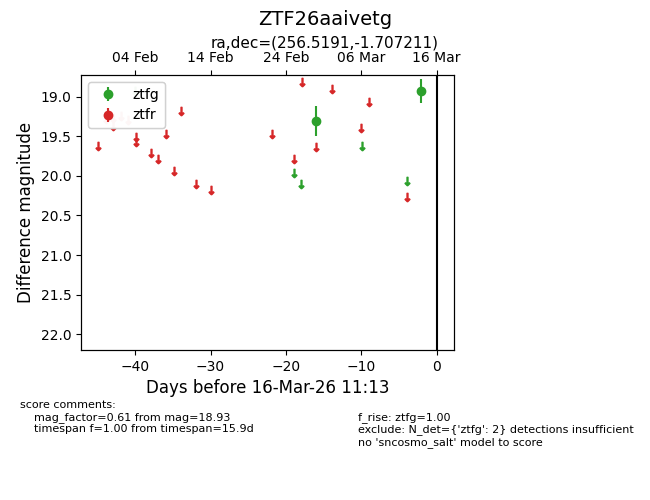
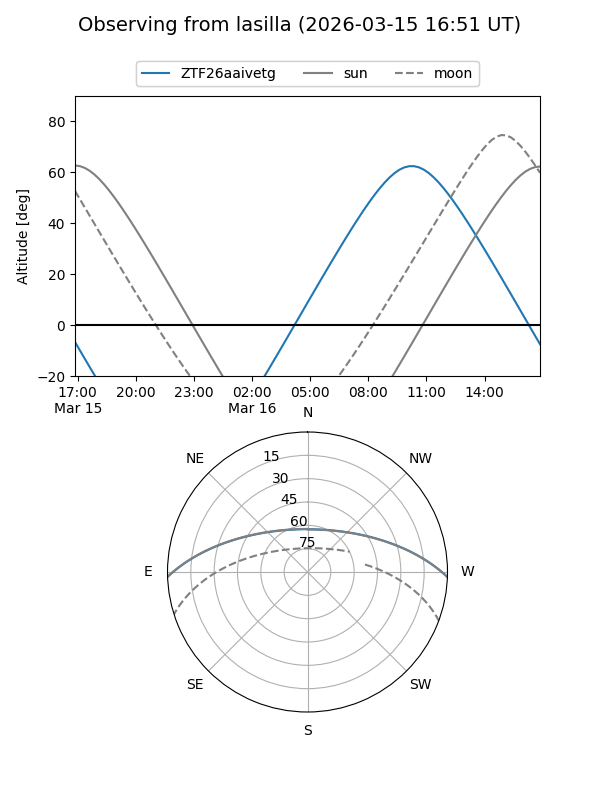
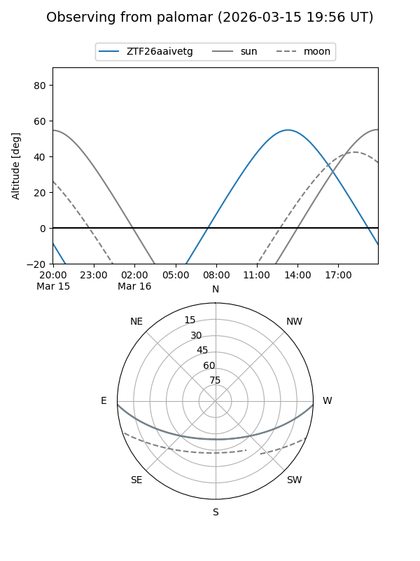

ZTF26aaivetg
Target ZTF26aaivetg at 2026-03-16 11:15
Aliases and brokers:
FINK: link
Lasair: link
ALeRCE: link
alt names
ZTF26aaivetg (ztf,fink_ztf)
Coordinates:
equatorial (ra, dec) = 256.5191,-1.70721
equatorial (HMS+DMS) = 17:06:04.59,-01:42:25.96
galactic (l, b) = (18.6070,+22.40369)
Flags:
Photometry:
last ztfg=18.93
2 ztfg detections
Lightcurve

Visibility


Additional plots